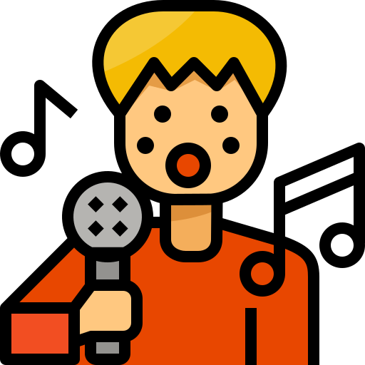

¿Maypiqtam kanki? — ¿De dónde eres?
¡Hola, hola! Bienvenidos a un nuevo episodio de Wanka Limay. Hoy presentamos la clase titulada
- ¿Maypiqtam kanki? — ¿De dónde eres?
. Aprenderemos a preguntar y expresar nuestra procedencia, hablar del origen de otras personas y utilizar los pronombres personales. Para practicar, conversaremos sobre música latinoamericana, países y ciudades.
¡Excelente! Cuando conocemos a alguien en la universidad, el trabajo o un concierto, podemos preguntarle:
- ¿Maypiqtam kanki? — ¿De dónde eres?
Es una expresión sencilla y muy útil.
Comencemos con el vocabulario. Hoy aprenderemos palabras y expresiones que realmente necesitamos para conversar:
- May — dónde, cuál lugar.
- Maypi — dónde, en qué lugar.
- Maypiqta — de dónde.
- ¿Maypiqtam kanki? — ¿De dónde eres?
- Piqta — de, desde; sufijo de procedencia.
- Yaqa — yo.
- Qam — tú.
- Pay — él o ella.
- Kaa — soy, estoy.
- Kanki — eres, estás.
- Malka — pueblo, localidad.
- Suyu — región, territorio.
- ¿Mayćhawmi yaćhanki? — ¿Dónde resides?

Takiy — cantar.- Taki — canción, canto.
¡Ahora sí tenemos herramientas para conversar! Observemos la diferencia entre
- maypi — dónde
y
- maypiqta — de dónde.
La primera pregunta por una ubicación; la segunda, por la procedencia.
Practiquemos.
- ¿Maypiqtam kanki? — ¿De dónde eres?
- Yaqa Huancayopiqtam kaa. — Soy de Huancayo.
- ¿Maypiqtam kanki? — ¿De dónde eres?
- Yaqa Jaujapiqtam kaa. — Soy de Jauja.
¡Perfecto! También podemos practicar utilizando Lima, Junín, Huancavelica, Pasco, Colombia, México o Argentina.
Ahora pasemos a la gramática. El elemento fundamental es -piqta, un sufijo ablativo que expresa origen, procedencia o punto de partida.
Por ejemplo, en
- Jaujapiqta — de Jauja
, tenemos el nombre del lugar más el sufijo -piqta. Si agregamos -m, obtenemos Jaujapiqtam, con un marcador que afirma la información.
Entonces, en
- Yaqa Jaujapiqtam kaa — Soy de Jauja
, podemos reconocer tres elementos:
- yaqa — yo,
- Jaujapiqtam — de Jauja
, y
- kaa — soy.
¡Exactamente! También recordemos los pronombres:
- yaqa — yo,
- qam — tú
y
- pay — él o ella.
En quechua wanka, pay no distingue entre masculino y femenino.
Eso resulta muy práctico. Podemos hablar de un cantante colombiano o de una cantante mexicana sin cambiar el pronombre.
Hay otra regla importante. En las oraciones nominales afirmativas de tercera persona y tiempo presente, el quechua wanka puede expresar la equivalencia de «es» sin utilizar un verbo explícito.
Por eso debemos evitar traducir mecánicamente cada palabra del español. La estructura gramatical del quechua wanka tiene sus propias reglas.
Pasemos a escuchar otra conversación.
¿Maypiqtam kanki? — ¿De dónde eres?
Yaqa Chilcapiqtam kaa. — Soy de Chilca.
¿Maypiqtam kanki? — ¿De dónde eres?
Yaqa Pilcomayopiqtam kaa. — Soy de Pilcomayo.
También podríamos responder con nombres como El Tambo, Huancán, Sapallanga o Pucará.
¡Muy bien! Ahora practiquemos otra pregunta:
- ¿Mayćhawmi yaćhanki? — ¿Dónde resides?
Observemos que preguntar dónde vivimos no es exactamente lo mismo que preguntar de dónde somos.
¡Correcto! Podemos ser originarios de Huancayo y vivir actualmente en Lima. La procedencia y la residencia son informaciones diferentes.
Pasemos a la pronunciación. Practiquemos:
- maypiqta — de dónde,
- kanki — eres,
- kaa — soy
y
- malka — pueblo.
En kaa debemos prestar atención a la vocal larga.
También recordemos la consonante retrofleja de
- yaćhay — aprender
, representada mediante ćh, aproximadamente [ʈ͡ʂ] en IPA.
¡Excelente! Terminemos practicando con una pregunta fundamental:
- ¿Maypiqtam kanki? — ¿De dónde eres?
- Yaqa Huancayopiqtam kaa. — Soy de Huancayo.
Ahora puedes utilizar la misma construcción para hablar de tu propia procedencia.
Hoy aprendimos a preguntar de dónde somos, utilizar el sufijo -piqta, distinguir procedencia y residencia, y reconocer los pronombres personales.
¡Nos encontramos en nuestra próxima clase de Wanka Limay!
- Walakama. — Hasta mañana.
- Hamallaa. — ¡Chao!